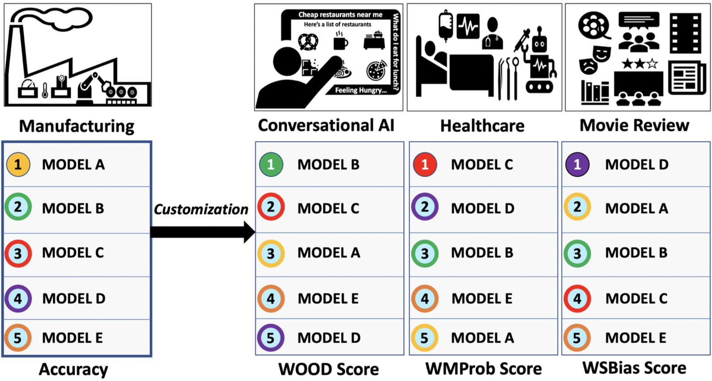
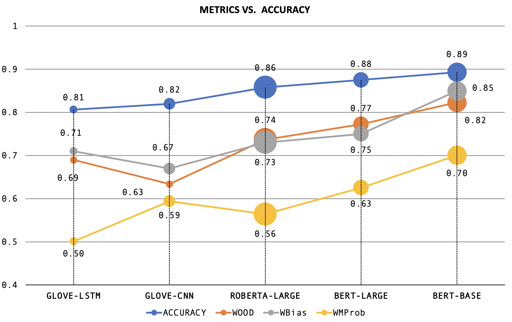
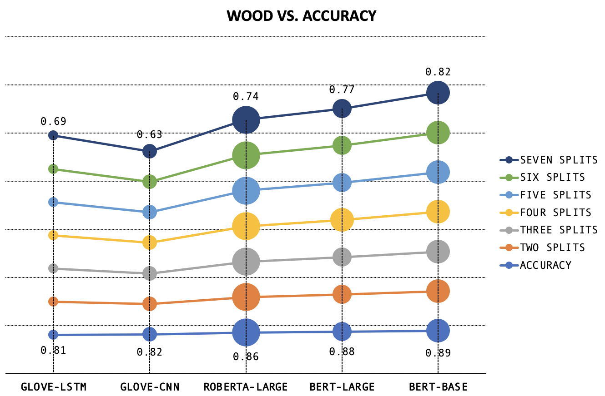
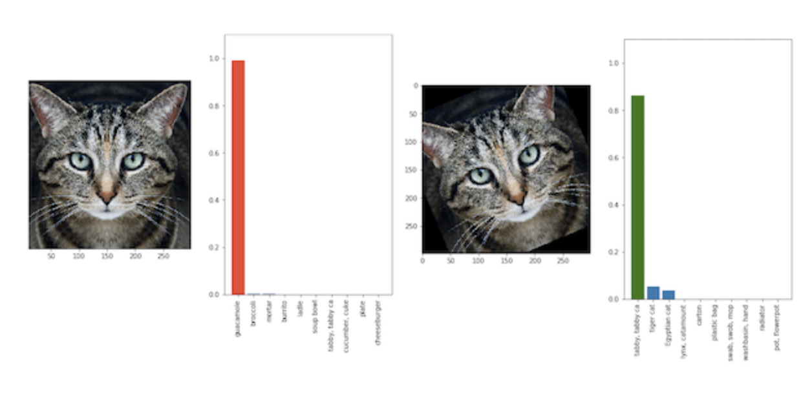

This page is a companion to
a line of work, which introduces new fair and robust evaluation
metrics to encourage model generalization.
In artificial intelligence (AI) and machine learning (ML), leaderboards provide rankings of models trained for a given task.
Generally, leaderboards provide one or more datasets (also known as a benchmark), which models must use to solve some kind of
classification or regression task (such as sentiment analysis and question answering)
Benchmarks are often split into three subsets, called train, dev, and test, with train and dev datasets being
made publicly available. If you want to develop a new model to try and attain a place on a leaderboard, you train the model using
the train subset and evaluate its performance using the dev subset. You upload the model code to the leaderboard's submission site
where moderators test it using the non-public test subset. Based on this performance, the model might appear on the leaderboard in a ranked position.
For example, Figure 1 (top) has a screenshot of a leaderboard from Allen AI for August 2020.
Listed are models in decreasing order of accuracy on a question answering dataset called Physical IQA. Question answering is the task of building systems to
automatically answer questions posed by humans in a natural language. Physical IQA contains questions regarding our knowledge about the Physical World.
Physical IQA - Physical Interaction QA
Main Leaderboard
Models are listed in decreasing order of accuracy on Physical IQA
Human Accuracy Human accuracy for a dataset is measured by asking a set of people to answer the same test set questions provided to the model
Line Chart
Included on the Allen AI page, this shows the accuracy of models submitted over time, with human accuracy as the standard to beat
Figure 1: Top- Allen AI Leaderboard for Physical IQA, Bottom- Allen AI Stats of Model Performance Over Time
Also present on the page is a line chart (Figure 1, bottom), which plots the accuracy of models submitted over time, using "human accuracy" on the dataset as the standard to beat. Human accuracy is measured by asking a set of people to answer the same test set questions provided to the model.
AI/ML leaderboards have been around for several years now, and competition to become the top-ranked model is fierce. Increasingly, top-ranked models
are becoming larger and more complex. Unfortunately, we are increasingly seeing a gap where, just because a model tops a particular leaderboard,
there is no guarantee that the model will actually be deployed in the real-world.
To help understand why high-performing leaderboard models don't necessarily translate to effective real-world usage, let's explore how AI/ML models are evaluated.
Do the evaluation metrics we use fairly evaluate?
There are a plethora of candidate evaluation metrics, including precision, accuracy, recall, F1 score, specificity, confusion matrix, etc.
Here, we focus on accuracy:how many data samples are correctly answered out of the total number of tested samples?
Essentially, accuracy is computed by assigning samples correctly answered with a weight of 1, and samples incorrectly answered with a weight of 0.
This is by far the most common way that leaderboards evaluate model performance.
SST-2 (Sentiment Analysis) Test Set Predictions - Accuracy
Ranking
Models are arranged in increasing order of accuracy
Red
samples are incorrectly classified
Green
samples are correctly classified
STS and Hardness
The y-axis measures the average similarity of each test set sample with the top 25% of most similar train set samples
OOD
Samples which are less similar to the train set are harder for models to solve (Mishra et.al.)
Inconsistencies
High accuracy models like BERT-BASE fail on easy (high STS value) samples
Figure 2: Beeswarm plots showing model performance variation across different sample STS values
In Figure 2, we show how models perform (indicated by color) for samples of different difficulty levels.
Here, we define a test set sample's difficulty in terms of its average semantic textual similarity (STS)-- based on Mishra et.al., 2020--
with the top 25% most similar
samples of the training set (using Spacy's BERT STS implementation). Since sample STS values are on a continuous scale,
we use beeswarm plots to represent the full difficulty distribution without overlap.
What aren't leaderboards telling us?
Figure 2 shows us that different models perform very differently on different levels of difficulty. Ranking based on overall naive accuracy does not reflect model
performance over the data distribution.
For example, suppose a Model Y answers all the "easy" questions correctly, and fails on the "tough" questions, while Model X answers more "tough" questions correctly,
but its overall count of correctly answered questions (i.e., accuracy) is low. Such "tough" questions can be considered akin to out-of-distribution (OOD) samples;
patterns/skills that the model learns from the train set cannot directly be applied to solve such samples.
Does this mean X is better than Y? Not necessarily, as it depends on the application scenario!
Consider a chocolate factory, where robotic components are monitored by a trained model, to account
for temperature and consistency during the manufacturing process. In such a scenario, the model is not likely
to experience significant environmental variation. In this case, correctly answering a higher number of overall samples is the most
important consideration, as OOD samples are rare, making naive accuracy an appropriate evaluation metric.
However, as different application domains contain different priorities and requirements, alternative evaluation metrics are increasingly vital to
ensure fair and robust model evaluation, as shown in Figure 3. Fortunately, recent research in this area has led to several newly proposed metrics that can be employed based
on a domain's semantics.
Here, we explain three recently introduced metrics which can be considered as alternatives to naive accuracy: WBias, WOOD, and WMProb.
These metrics tweak how accuracy is calculated by using different weight assignment schemes - positive for correct answers, and negative to impose penalties for
incorrect answers - and can be tailored based on a specific application domain.
To provide an overview, we first plot naive accuracy against WBias (Weighted Bias), WOOD (Weighted Out of Distribution), and WMProb (Weighted Maximum Probability) Scores in Figure 4.
The models are ordered based on naive accuracy, but this ranking is not maintained across the alternate metrics. Let's take a closer look at the three alternative
metrics to see how they evaluate model performance.
Figure 3: Model applicability changes with different application areas

Metric Comparisons on SST-2
Metrics Vs. Accuracy
While accuracy increases montonically, from the line plot, we see that the scores for the three new metrics do not.
Magnitude
The scores are also much lower than the accuracy values.
WOOD Vs. Accuracy
While WOOD Score values remain more or less constant over splits when identical weights
are assigned, WOOD also displays non-parallel behavior to accuracy.
Size
Size indicates the amount of computational resources invested in developing the model.


Figure 4: Left- Comparison of weighted metrics with accuracy, calculated over 7 splits of data, with +/-n weight scheme,Right- Comparison of WOOD Score (calculated over varying splits of data, with +/-n weight scheme) and Accuracy
Towards Equitable Evaluation
Basic Intuition
All three metrics operate on the same principle- questions with different levels of difficulty can't be scored uniformly. Deciding on what weights to assign as rewards/penalties
to correctly/incorrectly answered questions respectively depends on the application domain, i.e., the type and range of data that a model will encounter as well as
the level of tolerance for incorrect answering.
Common Goal - Improving Generalization
While test set performance gives an idea of how effectively models can solve in-distribution questions, recent works have shown that this does not guarantee performance on OOD and adversarial
data (Eykholt et al.,2018; Jia and Liang, 2017). Encountering OOD data is inevitable in
the real world (Torralba et.al., 2011); the metrics explain what makes
real world data a case of very hard IID in terms of bias (WBias), STS (WOOD), and confidence (WMProb).
The common trend in the metrics we analyze is that irrespective of the hardness scale's basis, the three weighted metrics assign lower weight to "easy questions"
and higher weight to "hard questions" (though, as previously mentioned, what defines easy and hard differs between each metric). Why is this helpful? In the same way that competitive exams like GMAT and GRE scale points according to the effort
required to solve a question, the metrics assign weight based on the model "effort" required for a correct answer, as shown in Figure 5.
Why Visualize?
From Figure 2, we've seen how a single score, irrespective of the metric used, does not give us a full idea of how models perform at different levels of difficulty.
Additionally, in order to sufficiently guarantee model performance in the real world, models need to be tested on datasets with different proportions of question difficulties.
Both of these can be addressed by analyzing model performance over different splits of data with the three metrics-- by testing chunks of data individually or in combination,
real data can be mimicked.
Visualizing model performance over splits is therefore essential, especially for larger datasets. Visual interaction enables the creation of a dynamic leaderboard, that allows users to analyze split-wise performance, decide how to weight splits based on their application
requirements and split-wise observations, and formulate different versions of evaluation metrics. This essentially makes for a low-resource one-stop-shop where users can
play around with models prior to deployment, to ensure better performance gurantees in the real world.
Metric Specifics
WBias, or weighted bias score, attaches lower scores to more biased(easily predictable) samples. Bias refers to
unintended correlations between model input and output (e.g.: if words like "not" or "no" are present in a sample, a biased model might label the sample as having negative
sentiment as it has seen many similar cases during training). An example where WBias is apt for evaluation is seen in Figure 6- machine translation from Turkish to English is incorrectly
gendered due to training set bias. In essence, WBias tries to estimate the level at which a model "hacks" the dataset as opposed to learning the
task-- something that is beyond the scope of naive accuracy.
Figure 6: Machine Translation ignores gender if trained on unbalanced dataFigure 5: Different models use different amounts of effort fordifferent difficulties (Left). Weights are assigned to equitablyevaluate different levels of sample difficulty (right).(Taken from Mehrabi et.al., 2020)
SST-2 Test Set : WBias Score
Ranking
Models are arranged in increasing order of accuracy
Predictability Score and Hardness
The y-axis measures the predictability scores of samples
Predictability
The score is calculated by finding the
number of times a sample is correctly predicted across 128 iterations using linear models such as SVM and Logistic Regression.
Splits
The dataset can be divided into "n" equal splits or "n" splits based on thresholds.
Color and Size
Color indicates the splits, and size indicates if the model
predicts the label incorrectly (smaller) or correctly (larger).
Comparison
Thresholded splits show more significant variation in split-wise model performance than equidistant splits. For example,
4 thresholded splits show that Bert Base and Bert Large performance with respect to each split are almost identical.
Figure 7: Beeswarm plots showing model performance variation among different clusters of samples based on WBias (predictability) values
WOOD, or weighted out-of-distribution score, tries to assess whether or not a model is likely to answer OOD samples correctly.
Samples are ranked using semantic textual similarity (STS, i.e., sentence similarity of test set samples with respect to train set samples), which
is an indicator of OOD characteristics. Samples with higher STS scores are weighted lower, as they are more likely to be in-distribution (IID). Accuracy however, weights all samples
equally, and therefore does not give any insights into how models might perform differently, at different points in the data distribution. For example, conversational
agents (as shown in Figure 8) are likely to experience a varying range of input, and thus WOOD Score is an important facet of model evaluation. In essence,
WOOD tries to estimate the range of samples that your model should be able handle.
Figure 8: Conversational Agents like Siri have to parse a varying input range
SST-2 Test Set : WOOD Score
Ranking
Models are arranged in increasing order of accuracy
STS and Hardness
The y-axis measures the semantic textual similarty (STS) of samples with respect to the train set.
STS
The score is calculated by taking the average of STS values for each sample with respect to the top n% of the train set. Throughout, we measure WOOD Score using the
top 25% most simlilar train set samples for each test set sample.
Splits
The dataset can be divided into "n" equal splits or "n" splits based on thresholds.
Color and Size
Color indicates the splits, and size indicates if the model
predicts the label incorrectly (smaller) or correctly (larger).
Comparison
WOOD Score values in the case of seven equidistant splits show that BERT-LARGE and BERT-BASE have very small differences in performance. Interestingly enough,
while ROBERTA-LARGE has an overall higher accuracy than GLOVE-LSTM, even if weighted and summed split-wise, it performs significantly worse on split 1, which contains the highest STS
(i.e., easiest) samples. This can be attributed to ROBERTA-LARGE forgetting portions of what it has learned during train, due to model size.
Figure 9: Beeswarm plots showing model performance variation among different clusters of samples based on WOOD (STS) values
Figure 10: Classification models can answer incorrectly with high confidence- a tilted cat is labelled as guacamole.Taken from Athalye et.al. (2018).
WMProb, or weighted maximum probability score, weights predictions according to the model confidence. Unfortunately, models sometimes provide
clearly incorrect predictions with high confidence. Accuracy does not take model confidence into account during ranking.
A sample with high confidence that is incorrectly predicted will hurt the score more than a sample
incorrectly predicted with low confidence. For example, in facial recognition, sometimes, tilted images are not recognized correctly- Figure 10 shows how
a tilted cat is classified as guacamole, with high confidence; WMProb can be the guiding evaluation metric for such scenarios. In essence, WMProb tries to penalize confident-but-incorrect predictions, while predictions with low confidence
(where the model essentially says "I don't know!") are less detrimental.

SST-2 Test Set : WMProb Score
Ranking
Models are arranged in increasing order of accuracy
Predictability Score and Hardness
The y-axis measures the confidence of sample predictions
Predictability
The score is calculated by weighting predictions according to their confidence and summing. Higher weightage is given to low-confidence samples. The aim is to
encourage the model to abstain in incorrect scenarios, rather than offering a wrong answer.
Splits
The dataset can be divided into "n" equal splits or "n" splits based on thresholds.
Color and Size
Color indicates the splits, and size indicates if the model
predicts the label incorrectly (smaller) or correctly (larger).
Comparison
Here, across all splits, we can see that a significant proportion of the models predictions have confidence levels >0.9. In case of thresholded splits,
this renders the low confidence (difficult) sample splits sparsely populated. However, by penalizing models through WMProb, we see that significant ranking changes occur
as in the case of five thresholded splits. On assigning negative weights to split 5, BERT-BASE no longer displays the highest model performance. Similarly, in the case
of Split 1, GLOVE-LSTM performance is the same as that of BERT-BASE.
Figure 11: Beeswarm plots showing model performance variation among different clusters of samples based on WMProb (Confidence) values
For better understanding of the case studies, we walk you through how WOOD score is calculated below. WBias (ranks based on confidence) and
WMProb (ranks based on predictability of samples) are similarly calculated (with the exception of step (ii)).
Calculation Steps:
(i) We find the sentence similarity of test set samples with respect to each of the training set samples.
(ii) We average the similarity of each test set sample with respect to the top n% similar samples to the training set.
(iii) We rank samples in decreasing order of this averaged similarity.
(iv) We split the samples into either equal splits or on the basis of thresholds.
(v) We assign weights for each split. The imposition of penalties for incorrect answers is also defined. The weights can be discrete or continuous.
(vi) We calculate the normalized score.
Below, we show how the weight scale used can be either continuous or discrete (splitwise). Discrete assignment can involve splits of equal/unequal size. Multi-grained comparative
model analysis using different subsets of data can be performed to find the points at which model rankings change (i.e., accuracy's results are broken). Initially,
the metric for analysis is selected and the beeswarm and overall accuracy graph for the models is displayed. Then, based on split creation, the accuracy chart is
replaced by a parallel coordinates plot which compares model performance at each split.
SST-2 Test Set : Model Ranking
Accuracy
Models are arranged in increasing order of accuracy. On changing the metric, the accuracy ranking of models is displayed below the beeswarm.
WOOD Score
The overall WOOD score of the model decreases in the scenario when those samples with low STS (i.e., higher OOD characteristics) are predominantly negatively weighted, as the absolute weights assigned for those samples are higher. This implies that the model is unable to generalize (perform well on OOD data) effectively. WMProb Score
If more incorrect samples are associated with high model confidence, the overall WMProb score of the model decreases. This shows that the model is unable to handle OOD data effectively, and that increases seen in its OOD performance might stem from non-learning related factors.
WBias Score
If those samples with low predictability scores (i.e., low spurious bias) are predominantly negatively weighted, the overall WBias score of the model will decrease as the absolute weights assigned for those samples are higher. This scenario would indicate that the model is over-reliant on spurious bias.
Comparison
Let "n" be the number of splits. To determine split wise accuracy of models, we either assign continous normalized weights, or assign weights for 1 split at a time for correct/incorrect samples respectively as follows:
(i) +n / -n
(ii) +n / 0
(iii) 0 / -n
(iv) +n / -n/2
(v) +n/2 / -n Analysis Split-wise ranking changes significantly, but is not affected
by different weight assignment. Ranking The parallel coordinates plot compares model performance for each split of data, based on the
vertical position of the model's point at each vertical line. We see that there are many crossing lines,
indicating a frequent change in model ranking.
Figure 12: Top- Beeswarm plots showing model performance variation among different clusters of samples based on WOOD / WMProb / WBias.Bottom- Bar Charts show accuracy values for models, and parallel plots show (a) number of incorrectly classfied samples, and (b) model performance, per split. Line Charts compare WOOD/WBias/WMProb with raw accuracy, and show how ranking changes.
Improving Machine Learning Systems
What kind of samples does a model need to solve more of- hard, easy, or a combination of both? Ultimately, the answer lies with the user,
as does the final choice of model selection.
Sticking to one accuracy metric, as leaderboards currently do, is increasingly limiting the ability of models to generalize over
diverse usage scenarios. In contrast, by approaching model development and evaluation with multifaceted evaluation metrics, such as WBias,
WOOD, and WMProb, more complex and tailored usage scenarios can be considered. Such metrics can also be applied in current discussion about
fairness in AI/ML, such as mitigating biased benchmarks and overfitted models, providing transparency and interpretability into models,
advancing generalizability and accessibility, and helping developers understand how different sample distributions can affect model performance.
References
Kevin Eykholt, Ivan Evtimov, Earlence Fernandes, Bo Li, Amir Rahmati, Chaowei Xiao, Atul Prakash, Tadayoshi Kohno, and Dawn Song. 2018.
Robust physical-world attacks on deep learning visual classification. In Proceedings of the IEEE Conference on Computer Vision and Pattern Recognition, pages 1625-1634.
Matthew Honnibal and Ines Montani. 2017. spacy 2:Natural language understanding with bloom embeddings, convolutional neural networks and incremental parsing.
To appear, 7(1).
Robin Jia and Percy Liang. 2017. Adversarial examples for evaluating reading comprehension systems.
arXiv preprint arXiv:1707.07328.
Mishra, Swaroop, et al. "Our Evaluation Metric Needs an Update to Encourage Generalization." arXiv preprint arXiv:2007.06898 (2020).
A. Torralba and A. A. Efros. 2011. Unbiased look at dataset bias.
In Proceedings of the 2011 IEEE Conference on Computer Vision and Pattern Recognition (CVPR '11). IEEE Computer Society, USA, 1521-1528. DOI:https://doi.org/10.1109/CVPR.2011.5995347
Mehrabi, Ninareh, Yuzhong Huang, and Fred Morstatter. "Statistical Equity: A Fairness Classification Objective." arXiv preprint arXiv:2005.07293 (2020).
Athalye, Anish, et al. "Synthesizing robust adversarial examples." International conference on machine learning. PMLR, 2018.